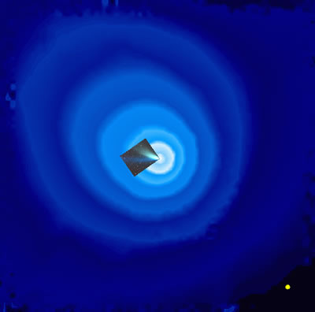

Credit: SOHO/SWAN (ESA & NASA) & J.T.T. Mdkinen et al.
Surrounding every moderately active comet is a sparse but extensive envelope of neutral hydrogen atoms. The hydrogen is liberated when ultraviolet radiation from the Sun splits the water vapour molecules released from the nucleus of the comet into the consitituent components, oxygen and hydrogen.
The size of the hydrogen envelope can be vast (for example, the hydrogen envelope surrounding comet Hale Bopp was 100 million km wide!), extending much further than the comet’s visible tails. For all of its enormity, however, the hydrogen cloud is not visible from the Earth, as it is only detectable in ultraviolet light. For this reason, the best views of cometary hydrogen clouds have come from the SOHO satellite, located about 1.5 million kms sunward of the Earth.